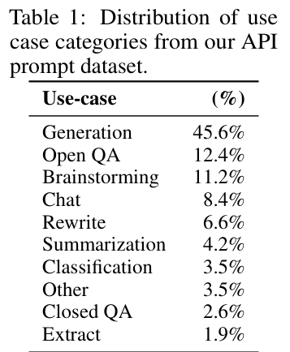
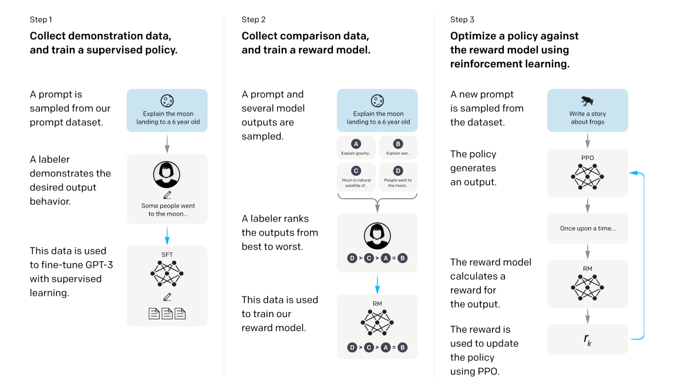
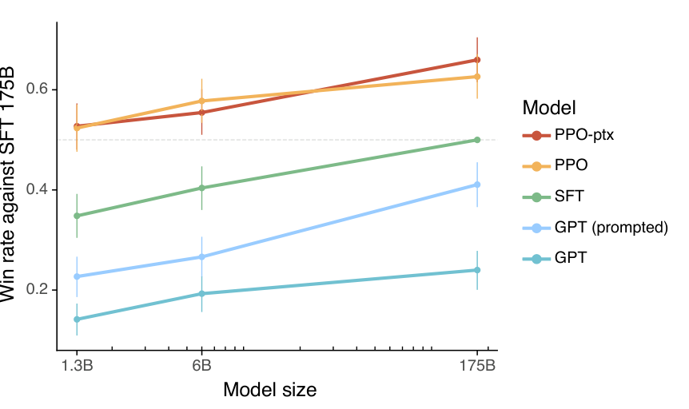

让只会续写的模型，学会听人的话
Ouyang 等人 2022 年在 OpenAI 写的《Training language models to follow instructions with human feedback》，就是 InstructGPT。GPT-3 被训练成「接着写网页上的文字」，不是「照用户的话办事」，所以它会编造、会跑题、会把你的指令当成题目列表的开头。他们补上一环：先让人写示范，再让人给多个回答排序并训练一个打分器，最后用 PPO 让模型朝高分方向改。结果是 1.3B 的 InstructGPT 在人类偏好评测里被选中的次数，比 175B 的 GPT-3 还多。这条路线后来成了聊天助手的标准做法。
- 正文只走一条线：GPT-3 为什么不听话 → 三步怎么把它调听话 → 数据和标注员 → 每个结论对应哪个实验 → 作者承认的局限。只读每节的标题和每段第一句，也能串起来。
- 公式、符号表、概念解释（对齐、KL、PPO、评测口径）、训练设置、标注员筛选细节，都在页尾的附录里，默认折叠，标明对应原文第几节；正文里每一步末尾会指到对应的附录块。
- 小数字例子都验算过：为讲解设定的标「示意」。表格和百分数逐项对照过原文。
- 零件在前面各篇讲过：模型是 011 GPT-3 的架构，优化用 005 Adam，「用人的比较训练打分器」是 015 人类偏好，算法是 016 PPO，「有益、诚实、无害」的框架来自 017 对齐实验室。这一篇是把它们接到一起。
1要解决的问题：会写，但不听话
先看一个原文 Figure 8 里的例子。提示词是一句法语，意思是「请用法语写一个关于青蛙穿越回古希腊的短故事」。175B 的 GPT-3 接下去写的，是又三条类似的指令，没有写故事。InstructGPT 直接写出了故事。
病根：训练目标和用户想要的不是一回事
预训练的目标是猜网页上的下一个词，奖励的是「像网上出现过的文字」。用户想要的是有益、诚实、无害地完成这一次请求。原文把这个差距叫 misaligned（错位），并说下一个词预测「只是我们真正想要的东西的一个代理」。能力有，倾向不对。
所以摘要第一句就是：把模型做大，并不会让它更会遵循用户的意图。规模律（009）预测的是预训练损失随规模下降，目标选错了，再大也还是在逼近「网页文字的分布」。（这一句联系 009 是我补充的，原文没引它。）
为什么直接的办法都不够
用户真正在做的事，和学术基准不一样
训练要对准的是真实用户的需求。原文 Table 1 是 API 提示词的用途分布：生成占 45.6%，开放式问答 12.4%，头脑风暴 11.2%；分类只有 3.5%，封闭式问答只有 2.6%。原文 4.1 节的概括是：分类和问答只占客户用法的约 18%，开放式生成和头脑风暴合计约 57%（45.6 + 11.2 = 56.8）。现成的 NLP 数据集偏向容易自动评分的任务，恰好不是用户最常做的事。

问题是：怎么让模型稳定地倾向于照人的意图办事，而不是每次靠提示词碰运气。
2三步流程总览
InstructGPT 不是新架构，也不是更大的模型。原文说所有模型都用 GPT-3 架构（1.3B、6B、175B 三个尺寸），InstructGPT 和 GPT-3 只差在是否用人类数据微调过。贡献是一整套「让模型听话」的流水线：
- 第 1 步：示范 → SFT。人写理想回答，监督微调 GPT-3。
- 第 2 步：排序 → 奖励模型。人给多个回答排好序，训练一个给回答打分的模型。
- 第 3 步：PPO。拿奖励模型的分数当奖励，继续训练模型。

3第一步：让人写示范
做什么：数据是（提示词，标注员写的理想回答）成对。用它们监督微调 GPT-3，得到 SFT 模型。训练目标还是预训练时的「最大化对数似然」，只是文字换成了示范。也就是说，不改架构，不改损失的形式，只改「让模型最大化哪一批文字的概率」。
为什么这样就行：示范告诉模型，遇到「把 cat 翻成法文」这种提示词，该接的是翻译好的词，而不是更多的题目。它让模型至少大致像一个助手，成为后两步的起点。
一个反直觉的细节（原文 3.5 节）：SFT 模型在 1 个 epoch 后验证损失就开始上升，但继续训练到 16 个 epoch，对打分器分数和人类偏好评分都更好，所以作者用打分器在验证集上的分数选模型，不用验证损失。原文只给了观察。我推测：验证损失衡量的是逐词复现那一条示范，而同一个提示词的好回答有很多种。这是推测，原文没这样说。
对着哪个毛病：GPT-3 把指令当题目列表续写（第 1 节图 1）。但只有示范还不够，示范只给正例，不说「哪个更好」。精确写法见附录 A 式 0。
4第二步：让人排序，训练打分器
做什么：对同一个提示词，让几个模型各生成回答，一共 K 个（K 在 4 到 9 之间），让标注员从好到差排序。再训练一个奖励模型（RM）：输入（提示词，回答），输出一个数，代表这条回答有多讨人喜欢。RM 的结构是 SFT 模型去掉最后的反嵌入层，换成输出一个标量。
为什么用排序：给一个回答打绝对分，人很难稳定（5 分和 6 分差在哪？）。比较两个回答哪个好，人容易得多，一致性也更高。K 个回答的排序，等价于 C(K,2) 对「赢家、输家」的比较：K=4 是 6 对，K=9 是 36 对。
为什么这样就行：训练目标是让赢家的分数比输家高。分数差被当作「人选这个而不选那个」的对数几率，损失就是标准的二分类交叉熵，标签永远是「赢家赢」。精确写法见附录 A 式 1。下面用 4 个回答的例子走一遍。
几个工程决定也影响结果（原文 3.5 节）：同一个提示词的 C(K,2) 对作为一个批元素一起算，而不是打散混进数据集，不然一个回答会参与 K−1 次更新，模型一遍数据就过拟合；只用 6B 的 RM 供所有尺寸的策略使用（175B 的 RM 训练不稳定）；只训 1 个 epoch。RM 能不能推广到没见过的标注员：5 折交叉验证，在没见过的那一组标注员上准确率 69.6 ± 0.9%，训练组内 72.4 ± 0.4%。
对着哪个毛病：给了「哪个更好」的信号，而且能用 RM 对大量没有人工标注的提示词自动打分，人的劳动被放大了。（后一点是我的补充，原文用的是 31k 个无标签的提示词。）
5第三步：用打分器训练模型
做什么：随机取一个提示词，让当前模型（策略）生成一条回答，RM 给它打一个分，这个分就是奖励，用 PPO 更新模型，回合结束。原文把它叫「赌博机（bandit）环境」：回答一次就结算，没有多轮交互。
为什么要用强化学习：回答是模型逐词采样出来的，「抽了 chat 而不是 Dear」是离散随机的一步，梯度没法穿过去，RM 又是对整条回答打分。策略梯度绕开采样：奖励高的回答，把生成它各个词的概率往上推，奖励低的往下推。比如同一个提示词采 3 条回答，RM 给 +2、0、−2，第 1 条被抬高，第 3 条被压低（示意；真实算法还要减一个基线来降方差）。
为什么要加 KL 惩罚：RM 只是人类偏好的一个不完美的近似，它见过的回答大多来自 SFT 模型。让 PPO 无限制地追高分，模型会漂到 RM 没见过、打分不可靠的区域，找出骗分的怪回答，而人并不喜欢。所以奖励里每个词都减去一点「离 SFT 有多远」，这是一根拴住模型的绳子，强度 β = 0.02。
对着哪个毛病：不再依赖「让人写满所有示范」，也不再只模仿，而是朝「人更喜欢」的方向优化；KL 惩罚对着「钻 RM 空子」。
6补救：混入预训练，减少对齐税
问题：纯 PPO 的模型在若干公开数据集上比 GPT-3 还差：SQuAD（阅读理解）、DROP（带数值推理的阅读理解）、HellaSwag（常识补全）、WMT 2015 法译英。让模型变听话的同时，其他能力退步了，这个退步叫对齐税。
为什么会这样：作者没有展开，下面是我的推测。PPO 的梯度全在推动「在客户提示词上拿高分」，没有任何一项在守护预训练学到的、与这些提示词无关的能力。KL 惩罚也守不住：它只衡量在 RL 提示词的回答上离 SFT 多远，不衡量预训练数据上的能力。
做法（PPO-ptx）：在目标里再加一项：从预训练数据取文本，最大化模型对它们的对数似然，也就是继续做普通的语言建模。γ 是这一项的权重，γ = 0 就是纯 PPO，γ > 0 就是 PPO-ptx。原文约定「除非另有说明，本文的 InstructGPT 指 PPO-ptx」，所以头条结果用的都是它。
对着哪个毛病：对着对齐税。它降低了税，没有把税归零：DROP、SQuADv2 和翻译仍落后。
7数据从哪来，评分的人是谁
前面三步的「人」不是一句话能带过的，它们本身就是方法的一部分。
提示词主要来自真实用户。主要来源是 OpenAI API Playground 上的提交，具体是用户在 Playground 里使用更早版本的 InstructGPT（只用示范数据监督训练过的）时提交的，界面反复提示「数据可能被用于训练新模型」。不使用生产环境 API 用户的数据。训练、验证、测试按用户 ID 划分，每个用户最多 200 条。最早 API 上几乎没有指令式提示词，所以又让标注员自己写三类（任意任务、少样本、按候补名单申请里的用例）。数据约 96% 是英文。
约 40 名外包标注员，经过筛选和长期对齐口径。通过 Upwork 和 ScaleAI 招募，先做筛选测试（敏感言论标记、排序一致率、敏感提示词的示范写作、自述能判断的话题），再有入职培训、详细的书面说明和共享聊天室答疑。训练标注员之间一致率 72.6 ± 1.5%，另招的、没做过训练数据的标注员之间 77.3 ± 1.3%。
有一个容易看漏的细节：训练时让标注员把「对用户有益」放第一，最终评测时让他们把「真实、无害」放前面。作者在 5.4 节说，若用户要求有害或不诚实的回答，他们允许模型生成，理由是有害与否取决于部署语境。后果见第 8 节。
这两点都会回到第 9 节：这些数据决定了「对齐」到底是对齐给谁。
8证据：它到底做到了多少
最大的一条：1.3B 的 InstructGPT 胜过 175B 的 GPT-3
评测方法：让标注员对同一个提示词，比较两个模型的输出，统计「A 被选中」的比例，叫胜率，0.5 是打平。原文所有主图都用「对 175B SFT 的胜率」做基线，因为它的表现大致居中。先看原文 Figure 1：从下到上依次是 GPT < GPT（带少样本前缀） < SFT < PPO ≈ PPO-ptx，三个尺寸都是这个次序。

这条「1.3B 胜过 175B」该怎么读：它是在作者的提示词分布上、由作者的标注员评出来的，不是「1.3B 在所有任务上都比 175B 强」。两者的架构和预训练数据相同，差别只在是否用人类数据微调。所以它说明的是：倾向的差距，可以大到压过 100 倍的参数量差距。能力（比如知识量）的差距并没有被抹平。（后一句是我补充的。）
两个公平性检查：①训练提示词是为 InstructGPT 设计的，可能对 GPT-3 不利，所以另外在「提交给 GPT-3 模型的提示词」上也评，结果没有明显变化；②没参与训练数据的标注员（held-out）的偏好与训练标注员相似，InstructGPT 仍大幅胜过 GPT-3，说明不是只记住了训练标注员的口味。
公开 NLP 数据集的指令微调不够：FLAN、T0
FLAN、T0 比默认 GPT-3 好，和「挑了好前缀的 GPT-3」差不多，比 SFT 还差（InstructGPT 对它们的胜率见图 8）。作者给的两个原因：公开数据集偏向容易自动评分的任务，而这类任务在真实提示词里只占小头；公开数据集也很难做到真实用户输入的多样性。他们也提醒：最全面的指令跟随模型会把两类数据结合起来。
真实性有改善，毒性和偏见没有同样的好消息
TruthfulQA 上，原文第 1 节说「又真实又有信息」的比例约为 GPT-3 的两倍，4.2 节则说人评下是「小而显著的改善」，两处措辞不同。原文致谢还说，Owain Evans 和 Stephanie Lin 指出自动的 TruthfulQA 指标夸大了 PPO 模型的提升，所以不宜把「约两倍」当稳妥读数，以 Figure 6 的人评为准。例外：1.3B 的 PPO-ptx 比同规模 GPT-3 略差。
对齐税：补回大部分，没补回全部
第 6 节已经讲过机制：纯 PPO 在 SQuAD、DROP、HellaSwag、翻译上退步，PPO-ptx 补回大部分，HellaSwag 上超过 GPT-3，DROP、SQuADv2、翻译仍落后。怎么读：对齐可以做到低税，但不是零税。
三个结论收在这里：人类反馈比单纯放大更能让模型听话；改善集中在「指令遵循」和「少编造」，不包括偏见；纯 PPO 会退步，要靠预训练混合补。
9局限和后来
对齐给谁：这是全文最重要的反思（原文 5.2 节）。所谓「人类偏好」，在本文里被实现成：①约 40 名标注员的示范和偏好，主要是住在美国或东南亚、说英语的外包人员，他们彼此在很多例子上不一致（一致率约 73%）；②研究者的偏好，因为是研究者写了标注说明并在聊天室里回答边界问题；③API 客户的偏好，因为训练提示词来自客户；④而 OpenAI 的客户并不代表所有用户。作者的原话大意：本文「不是在声称研究者、标注员或客户是偏好的正确来源」，「不可能训练出一个同时对齐所有人偏好的系统」。
更听话也包括听坏话。5.3 节说，最大的局限也许是模型大多数时候会遵循用户指令，即使可能导致现实中的伤害（图 9 右）。模型仍会犯简单错误：顺着带假前提的指令说，简单问题也过度含糊，多约束指令表现下降。作者推测前两点来自标注员奖励「认知上的谦逊」和训练集里假前提的提示词太少，这是推测，不是已证。另外大多数比较只由 1 名标注员标注。
后来：作者自己指出的方向包括对抗式数据收集、让模型有时拒绝请求、更高效的反馈形式（编辑回答、写自然语言批评）、可以按特定群体偏好调整的模型。后世的情况，以下是我凭一般知识的说法，部分待核实：这套「SFT → 偏好数据 → 奖励模型 → 强化学习」的骨架成了聊天助手后训练的常见做法；也出现了绕开显式强化学习的变体（如 DPO，2023）、用 AI 代替人产生偏好标注的做法；「对齐给谁」今天仍是开放问题。
附录 · 想深入再看
下面每一块都默认折叠，标题里写明了对应的原文章节；正文用不到它们。其中标「我补充」的，是原文之外我加的说明，标「待核实」的是我没有核对清楚的。
A · 公式和符号表（原文 3.5 节 Eq. 1、Eq. 2）
式 0：监督微调的损失（和预训练同一种形式，只是数据换成示范）：
式 1：奖励模型的成对损失
| 符号 | 是什么 |
|---|---|
| yw、yl | 同一提示词下，被标注员排得更靠前（winner）和更靠后（loser）的两个回答 |
| rθ(x, yw) − rθ(x, yl) | 赢家与输家的分数差；差越大，RM 越肯定赢家更好 |
| σ(z) = 1 / (1 + e−z) | sigmoid，把实数变成 (0,1) 的概率，σ(0) = 0.5 |
| 1 / C(K,2) 与 E | 对这个提示词下的所有 C(K,2) 对取平均 |
分数差被当作「人选赢家」的对数几率，P(赢家被选中) = σ(分数差)；损失是标准的二分类交叉熵（与统计学里的 Bradley–Terry 模型相同，见 015、017，原文本篇未用此名）。RM 只关心差，所以分数没有零点；原文加了一个偏置，使标注员示范的平均得分为 0。
式 2：带 KL 惩罚和预训练混合的 RL 目标
+ γ · Ex ~ D_pretrain [ log πRL(x) ]（原文 Eq. 2）
| 符号 | 是什么 |
|---|---|
| φ | RL 策略 πRL 的参数（被优化的对象） |
| Dπ_RL | （提示词 x，回答 y）的分布：x 取自 RL 提示词集，y 由当前策略采样 |
| D_pretrain | 预训练语料（训练 GPT-3 的那份数据，附录 C.4） |
| log πRL(x) | 策略对整段预训练文本的对数似然，就是普通语言建模损失的相反数 |
| πSFT | PPO 的初始化模型（2 个 epoch 的 SFT 加 10% 预训练混合），不是 16 个 epoch 的对比基线 |
| rθ | 固定不动的 RM |
| β = 0.02，γ = 27.8 | KL 惩罚强度与预训练梯度的系数；γ = 0 就是纯 PPO |
实现（附录 C.4）：每个小批先算 PPO 梯度，再算预训练梯度，两者累加到同一个梯度缓冲区，预训练梯度乘以 γ。我补充（示意，非原文）：若每股梯度按样本数取平均，预训练梯度的权重是 PPO 的 27.8 倍；若按样本数求和，则约 8 × 27.8 ≈ 222 倍。原文没说是哪一种，也没解释为什么 γ 这么大。我推测是预训练文本上模型已经拟合得好，那一项梯度本来很小，需要放大才能与 PPO 抗衡，待核实。
B · 概念注解（对齐、强化学习、KL、PPO、评测口径；原文第 1、3.5、3.6 节）
对齐与 HHH。原文借用 Askell 等（2021，017 篇）的三条标准。有益：帮用户完成任务，指令不清时从示例或格式推断意图，主指标是标注员偏好评分。诚实：不编造、不误导；但原文承认无法测模型的「信念」，退而测真实性（封闭域任务里的编造率、TruthfulQA）。无害：不对人或环境造成身体、心理、社会伤害，用一组代理指标：客服场景是否恰当、是否贬低受保护群体、是否含性或暴力内容，再加 RealToxicityPrompts、CrowS-Pairs。
为什么不能把分数直接当损失。回答是逐词采样出来的，采样这一步离散、随机，梯度传不过去，RM 又是对整条回答打分。策略梯度只需要能算 log π(y|x)：奖励高的回答，把生成它各个词的概率往上推；奖励低的往下推。原文说环境是 bandit，是从奖励一侧看；从 PPO 的实现一侧看，每个 token 是一步，KL 惩罚逐 token 扣，价值函数逐 token 估（我补充，两种说法不矛盾）。
KL 惩罚里的「每个 token」。回答的对数概率是各词对数概率之和，所以对数比也是逐词的和，每生成一个词就扣一点。β = 0.02 下，扣掉 1 分奖励需要总对数比约 50，是一根在近处几乎不拉、对又长又漂得远的回答才明显收紧的绳子（示意）。KL 系数取 0 或 2 都很差，最佳值约在 0.01 到 0.02（附录 E.7）。
PPO 与价值函数。PPO 的「近端」是每次更新不让新策略离旧策略太远，clip ratio = 0.2 就是这个限度；价值函数估计「这一步之后平均能拿多少奖励」，当基线降方差，本文从 6B RM 初始化它。细节见 016 篇。
评测口径。胜率：两个模型的输出让标注员比较，统计「A 被选中」的比例。Likert：标注员对输出打 1 到 7 分。幻觉：本文特指封闭域任务（摘要、封闭域问答）里输出包含输入里没有的信息。TruthfulQA：专门设计成人们常有误解、模型容易模仿错误答案的问题。RealToxicityPrompts：一批可能引出毒性续写的开头，用 Perspective API 自动打分，也让人评。Winogender、CrowS-Pairs：成对的句子，一句带刻板印象、一句不带，比较模型给两句的概率；熵越低，越肯定地偏向某一句，也就越有偏（完全无偏时二选一的熵是 1 比特，90% 偏向某一句时是 0.469 比特）。
C · 前面各篇的概念，在本篇用到了哪里（原文第 1、2、3 节）
- Transformer、解码器、掩码（004、006）：每个模型都是 GPT-3 架构；RM 只是把最后一层换成输出标量。
- 预训练加微调（006）：整套框架；PPO-ptx 里「混入语言模型目标」的思路在 006 的辅助目标里出现过，作用对象不同（那里是任务文本，这里是原始预训练语料）。
- 提示词与少样本（007、011）：本文的「GPT-3（prompted）」基线；前缀由作者之一在「前缀竞赛」里挑出。
- 规模律、Chinchilla（009、010）：本文用「对齐算力对预训练算力」的对比，原文没有引用 Kaplan 或 Hoffmann，1.6% 是我算的。
- Adam（005）：附录 C 写明所有模型都用 Adam，β1 = 0.9，β2 = 0.95。
- 能力不足与对齐失败的区别（012）：本文的「错位」属于后者。
- 人类偏好、强化学习、成对比较（015、016、017）：强化学习的词汇与 Bradley–Terry 模型见 015；PPO 见 016；HHH 与对齐税的早先测量见 017。
D · 数据与标注员的更多细节（原文 3.2、3.4 节，附录 A、B）
提示词的清理与划分。共享长前缀的提示词去重；每个用户 ID 最多 200 条；训练、验证、测试按用户 ID 划分；训练集过滤个人隐私信息（PII）。早期冷启动让标注员写三类：Plain（任意任务，保多样性）、Few-shot（一条指令配多组示例）、User-based（按 API 候补名单申请里写的用例）。
标注员筛选（附录 B.1）。四个标准：①敏感言论标记与研究者的一致程度；②对多个回答排序与研究者的一致程度；③敏感提示词的示范写作（研究者按 1 到 7 分评）；④自述对哪些话题或文化群体敢于判断敏感言论（因法律原因不能按人口统计特征招聘）。最终选在所有标准上都表现好的人，实际是主观挑选，但有软门槛：敏感言论标记和比较的一致率 75%，示范得分 6/7。
管理与沟通。有入职培训，每个任务有书面说明，共享聊天室随时答疑（5.2 节说，标注员的偏好因此部分来自研究者）。作者有意保持团队很小，便于高带宽沟通。一致率：训练标注员之间 72.6 ± 1.5%，held-out 标注员之间 77.3 ± 1.3%（他们没有筛选测试）；对照 Stiennon 等摘要工作里研究者之间的 73 ± 4%。
构成。19 位自愿匿名回答者里，75% 在 35 岁以下，国籍以菲律宾、孟加拉国、美国为主，多数认为任务有趣、报酬公平。
训练与评测优先级不同。训练时有益优先，最终评测时真实和无害优先。训练标准与评测标准不同只影响读数；模型会听从有害请求的原因，是训练时有益优先和 5.4 节说的「允许生成」。
E · 训练设置与超参数（原文 3.5、5.1 节，附录 C）
| 项目 | 数字 | 出处 |
|---|---|---|
| SFT（对比基线） | 16 个 epoch，余弦学习率衰减，residual dropout 0.2；用 RM 分数选模型 | 3.5 节、附录 C.1 |
| PPO 的初始化模型 | 2 个 epoch 的 SFT，同时混入 10% 预训练数据 | 附录 C.3 |
| RM | 6B；1 个 epoch；批大小 64 个提示词，一批最多 64 × C(9,2) = 2,304 对；平局丢弃 | 3.5 节、附录 C.2 |
| RM 泛化 | 5 折交叉验证：没见过的组 69.6 ± 0.9%，训练组内 72.4 ± 0.4% | 4.1 节、附录 E.2 |
| RL 回合数 | 256k（约 31k 个提示词） | 附录 C.4 |
| 批大小 / 小批 | 512 / 64 | 附录 C.4 |
| KL 系数 β | 0.02 | 附录 C.4 |
| PPO clip | 0.2 | 附录 C.4 |
| 预训练梯度系数 γ | 27.8（所有规模） | 附录 C.4、E.6 |
| 优化器 | Adam，β1 = 0.9，β2 = 0.95 | 附录 C |
| 175B SFT 算力 | 4.9 petaflops/s-days | 5.1 节 |
| 175B PPO-ptx 算力 | 60 petaflops/s-days | 5.1 节 |
| GPT-3 预训练算力 | 3,640 petaflops/s-days | 5.1 节（引 Brown 等 2020） |
附录 E.8 到 E.11 说 PPO 的稳定性依赖大量调参（我补充）：预训练数据比例为 4 时预训练损失会上升，32 时更好但训练时间成倍增加，最终选 8。不要以为这一套开箱即用。
F · 泛化、简单错误与偏见的结果（原文 4.2、4.3 节）
泛化（定性，没有量化）：模型能遵循非英语指令（虽然常用英语回答），能对代码做摘要、回答代码问题；这些在微调数据里是极小的少数。作者的解读：对齐的方法可能泛化到人类没有直接监督的输入上，但需要研究这种泛化随能力增长是否保持。GPT-3 也能做这些，但需要更仔细的提示，通常不遵从指令。
仍会犯的简单错误：顺着带假前提的指令说；简单问题也说「没有唯一答案」；多约束指令（如「列 10 部 1930 年代以法国为背景的电影」）表现下降。
偏见：作者的描述是「偏见的模式并不清楚；似乎被指令训练过的模型对自己的输出更有把握，无论输出是否带刻板印象」。要求「尊重」时熵反而更低（更偏向某一句）。
当给模型一个「不确定时说 I have no comment」的提示：PPO 模型倾向于真实但无信息，而不是自信地说错话。
G · 作者承认的局限与我补充的局限（原文 5.2 到 5.4 节）
5.3 节方法学局限：约 40 名标注员显然不能代表所有使用者；大多数比较只由 1 名标注员标注，多人标注才能发现分歧大的地方；有分歧时对齐到平均标注员偏好可能并不可取，例如对少数群体影响更大的文本，也许应更看重该群体标注员的偏好。
5.4 节开放问题（节选）：对抗式数据收集；与过滤预训练数据结合；与 WebGPT 类方法结合；让模型有时拒绝指令；比较之外更高效的反馈形式；其他算法如专家迭代、更简单的行为克隆；以及对齐到指令、意图、显式意图、显示偏好、理想偏好、利益还是价值之间的差别（引 Gabriel 2020），本文为简单起见对齐「推断的用户意图」。
我补充的局限：①评委与训练信号同源：主指标是标注员偏好，和 RM 学的是同一批人的口味，虽有 held-out 标注员检验，但来自同一批供应商，且原文自己写的是「preliminary」。②只汇报平均效应，没有按用户群体、语言、领域拆分；非英文只有定性例子。③RM 本身的质量只用成对准确率（约 70%）衡量，对一个只有约 73% 标注员一致率的任务这已接近上限，但也说明 RM 的分数含有大量噪声，过度优化的风险是真实的。
H · 当时的背景与后来的发展（原文第 2 节；其余为后世，多数待核实）
当时（2022 年初）：GPT-3 已通过 API 开放近两年，OpenAI 因此有了真实用户提示词，这是本文数据的独特优势。RLHF 起源于模拟机器人和 Atari 游戏（Christiano 等 2017，015 篇），随后用于文本摘要（Ziegler 等 2019、Stiennon 等 2020）。本文自述方法沿用 Ziegler 等和 Stiennon 等，是 RLHF 在广泛语言任务上的直接应用。FLAN（Wei 等 2021）和 T0（Sanh 等 2021）在本文之前不到半年（发表月份待核实）。
后世（我凭一般知识，待核实）：OpenAI 2022 年 11 月发布 ChatGPT 时称其用与 InstructGPT 相同的方法训练，只是数据收集设置略有不同；Anthropic 的有益无害 RLHF 工作、Llama 2 也采用了类似流程。DPO（2023）直接用成对偏好数据改策略，不单独训奖励模型、不跑 PPO（原文 5.4 节提到的是更简单的行为克隆，与 DPO 并非同一方法，不要当作预言）。近年的推理模型训练在数学、代码等有标准答案的任务上用程序判定的奖励。「预训练是能力，后训练是倾向」「比较比打分容易」「用与参考模型的距离作正则」「对齐税」这些思路今天仍在；但部分推理模型的强化学习已经去掉了 KL 项，所以别把 KL 当默认配置。批评的声音也有：RLHF 可能让模型迎合标注员（谄媚）、削弱输出多样性（后世争论，非本文结论）。
I · 前后篇衔接，以及从 001 到 018 的整条线
相对 011：不改架构、不增参数，只改训练目标和数据，就在人类偏好评测上让 1.3B 超过 175B；把「靠提示词碰运气」变成「模型本身稳定地倾向听话」。对齐税这个概念及其测量并非本文首创，017 已测过：小模型付税，大模型几乎不付；本文是在 RLHF 的设定下量化了它，并提出 PPO-ptx 作补救。
一句话主线（我的归纳，不是各篇原话）：先学会把词变成向量并预测下一个词（001）；再学会把一个序列变成另一个序列（002），并让它回头看（003）；然后去掉循环，只留注意力（004），训练可以并行、模型可以放大；于是预训练一个大语言模型再微调（006），发现它几乎不用微调就能做事（007、011），也发现规模与算力的配置有规律（009、010）；其间有各种配套（005 优化器、008 双向、012 代码、013 检索、014 低秩适配）；最后发现能力够了、倾向不对，于是用人类偏好加强化学习（015、016、017，到 018）把它调成助手。
| 阶段 | 篇目 | 留下的问题 |
|---|---|---|
| 把文字变成数 | 001 | 只能看固定窗口 |
| 序列到序列 | 002、003 | RNN 串行，难并行 |
| 去掉循环 | 004、005 | 每个任务都要标注数据 |
| 预训练范式 | 006、007、008 | 仍需为每个任务微调；单向和双向的取舍 |
| 规模 | 009、010、011 | 规模不改变目标；用起来靠写提示词 |
| 工程与扩展 | 012、013、014 | 模型有能力，但不一定听话 |
| 对齐 | 015、016、017、018 | 对齐给谁？怎么评估诚实？超过人类评判能力的任务怎么办？ |
最后一列里「对齐给谁」不是算法能回答的问题，这是这条线当前的终点（原文 5.2 节）。
J · 疑点与待核实（只记，不下结论）
- TruthfulQA 的「约两倍」（第 1 节）和「小而显著的改善」（4.2 节）措辞不同，原文没有说明评测子集和提示词是否相同；读数请以 Figure 6 为准。
- 「1.3B 的 InstructGPT 胜过 175B 的 GPT-3」在正文里没有给具体胜率数字，只在摘要、第 1 节、Figure 1 里说。
- γ = 27.8 为什么这么大，原文没解释；梯度是按样本数取平均还是求和，原文没说。
- 后世部分的说法（ChatGPT、Llama 2、DPO、推理模型等）我没有逐条核对，已标「待核实」。
- 论文后来是否发表于 NeurIPS 2022，我没有核对。